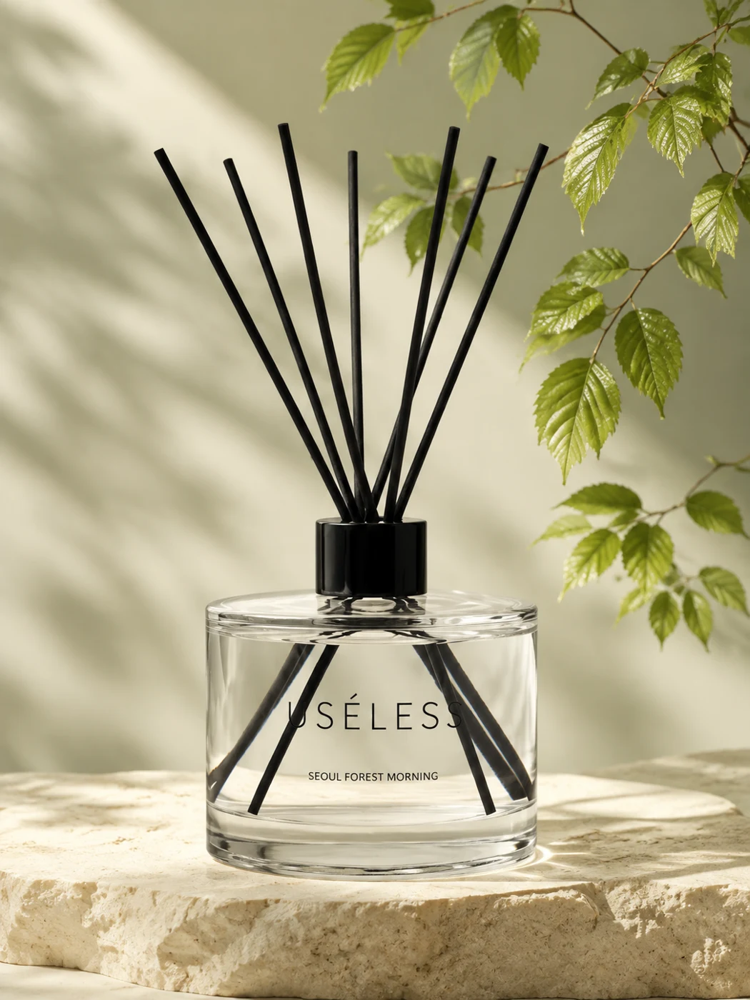

그린 리프 · 모닝 에어
Green Leaf · Morning Air
젖은 잎과 서늘한 아침 공기를 떠올리는 시작.

AT A GLANCE / 3 POINTS
01 / SCENT IMPRESSIONS
향을 고를 때 떠올려 볼 세 가지 인상.
Green Leaf · Morning Air
젖은 잎과 서늘한 아침 공기를 떠올리는 시작.
Hinoki · Cedarwood
초록의 인상에서 이어지는 깨끗하고 단정한 나무의 결.
Soft Musk
나무의 끝에 부드럽게 남는 잔향의 인상.
기재된 향 노트를 감각적으로 풀어낸 설명입니다. 실제 향의 인상은 공간과 개인에 따라 다르게 느껴질 수 있습니다.
02 / A SCENE TO KEEP
발걸음이 조금 느려지는 길. 아직 서늘한 공기와 젖은 잎, 나무 사이로 들어오는 빛을 떠올립니다. 특별한 목적 없이 걸었던 아침이 오래 기억에 남는 것처럼, 집에서도 다시 만나고 싶은 초록의 순간을 담습니다.
서울을 담는 USÉLESS 이야기 ↗03 / CHOOSE YOUR MOMENT
나무가 있는 길과 이른 아침의 공기를 좋아한다면.
함께 걸었던 날을 기억할 수 있는 물건을 찾을 때.
나무 가구와 책, 식물이 있는 자리에 어울리는 향을 찾을 때.
04 / LOOK CLOSER
초록 잎의 자연스러운 선과 대비되는 곧은 리드.
밝은 돌과 유리 위를 지나가는 나뭇잎 그림자.
나무 선반이나 책장 한편. 종이와 유리, 자연스러운 우드 톤 옆에 두고 산책의 기억이 이어지는 작은 자리를 만들어 보세요.
05 / A GIFT WITH A STORY
선물을 고를 때, 그 사람이 좋아하는 장소와 시간을 떠올려보세요.
향과 함께 나눌 이야기가 하나 더 생깁니다.
06 / PRODUCT INFORMATION
| 제품명 | USÉLESS 서울숲의 아침 |
|---|---|
| 구성 | 500ml × 2병 세트 |
| 향의 인상 | GREEN LEAF · HINOKI · MUSK |
| 판매 상태 | 출시 일정과 판매 가격은 오픈 시 안내합니다. |
전성분, 최종 용기·라벨·동봉 구성, 제조 정보와 발향 지속 기간은 판매 시작 전에 안내합니다.
아직 등록된 리뷰가 없습니다.
| 향 | 향의 흐름 | 선택의 기준 |
|---|---|---|
| USÉLESS성수 무화과 ↗ | 무화과 · 자두 → 편백 · 사이프러스 → 우드 | 서울의 기억을 담은 선물, 단정한 공간 |
| amaimüMiss Fig ↗ | 무화과 · 자두 → 편백 · 사이프러스 → 우드 | 컬러 레터링과 내 책상 위 작은 즐거움 |
| USÉLESS호텔 블랭킷 ↗ | 클린 → 라벤더 → 머스크 | 여행에서 만난 침실의 분위기 |
| USÉLESS서울숲의 아침 ↗ | 그린 리프 → 히노키 · 시더우드 → 머스크 | 나무와 이른 산책을 좋아하는 취향 |
| USÉLESS석촌 체리우드 ↗ | 체리 · 꽃잎 → 시더우드 · 샌달우드 → 머스크 | 함께 걸었던 계절과 우드 톤의 공간 |
| USÉLESS카페 플라워티 ↗ | 베르가모트 → 플로럴 티 · 블랙 티 → 머스크 | 찻잔과 책이 있는 오후의 테이블 |
현재 소개된 향 노트와 브랜드 제안을 비교한 안내입니다. 성수 무화과와 Miss Fig는 공통된 무화과·우드 노트를 소개하고 있어, 향의 차이를 단정하기보다 디자인과 담고 싶은 장면을 함께 살펴보세요.